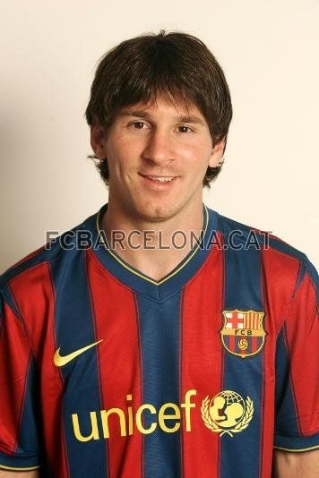

个人简介
概述
梅西（1987年6月24日－），阿根廷足球员，现效力于西班牙足球甲级联赛的巴塞罗那俱乐部，司职

右边锋，亦为阿根廷现役国脚。梅西脚法出众，突破能力当今无人能出其右，被称为“新马拉多纳”，是当今世界足坛最杰出的足球运动员之一。
梅西2008-2009赛季率领球队连夺西甲、国王杯和欧冠三个冠军，成就了西班牙球队史无前例的三冠王。2009年7月，梅西和俱乐部签订新约，新约在2005年9月的条款基础上大幅度加薪，并且将违约金提升至3亿欧元。
青少年时期
5岁时梅西开始为当地的格兰多里俱乐部踢球，教练就是他的父亲。7岁的时候这个小家伙就在纽维尔老男孩队倍受称赞。但梅西在11岁时被诊断出发育荷尔蒙缺乏，而这会阻碍他的骨骼生长。家里的经济条件难以承受小梅西的治疗费用，由于他的天赋被巴萨的雷克萨奇看中，在2000年将他带到诺坎普，梅西举家搬迁到欧洲。
在2000年9月，年仅13岁身高只有140cm的梅西去了巴塞罗那试训。在试训期间，梅西的表现征服了巴萨青年队教练，他们迫不及待的与梅西签订了一份2012年才会到期的工作合同，却忘记国际足联相关规定，未满20岁的球员不得和俱乐部签定5年以上的工作合同。巴塞罗那俱乐部在帮助西成长方面作
出了巨大的努力，在俱乐部所安排的治疗下，梅西在2003年身高已经达到1米7。加泰罗尼亚人毫不犹豫的就给他在俱乐部注册并安排他去医疗部接受治疗。2008年这名来自罗萨里奥的21岁小伙子已经长到了170cm。
在2003年11月的一场友谊赛中，年仅16岁的梅西首次代表巴萨一队出场。但梅西代表巴萨一队在正式比赛中出战还是在一年之后――2004年10月西甲联赛巴萨对西班牙人，梅西在第83分钟替换德科上场，也让阿根廷小将成为代表巴萨在联赛中出场的第二年轻球员。惟一超越他的是巴萨菲律宾裔传奇前锋阿尔坎塔拉，后者15岁便代表巴萨一队比赛。
在阿根廷国家队，梅西从青年队级别开始崭露头角，05年世青赛上他以6球夺取最佳射手。06年，17岁3个月零22天的登场年龄，他成为代表阿根廷参加世界杯的最年轻球员。2008年，他赢得了首个国家队荣誉，代表阿根廷奥林匹克队夺取了金牌。
南非世界杯表现
小组赛
6月12日 阿根廷1:0尼日利亚
6月12日，世界杯B组第1轮比赛中，凭借海因策的头球，阿根廷1:0小胜尼日利亚，有惊无险地拿到3分。世界杯的第一场比赛，梅西就展现了自己新阿根廷王的气质。
比赛中，梅西在前场的活动，极大地牵扯了尼日利亚反扑的力量，而梅西也正逐步融入阿根廷，逐渐找到感觉。
这场比赛让人们相信，梅西能带领阿根廷走得更远，完成从巨星到球王的质变。正如马拉多纳赛前所说的那样：“梅西就像1986年世界杯的我，他甚至比我更好。”[1]
6月17日 阿根廷4:1韩国
6月17日，世界杯B组第2轮首战在约翰内斯堡足球城球场展开较量，阿根廷4比1击败韩国。上半时，梅西任意球造成朴周永自摆乌龙，萨穆埃尔因伤退场，伊瓜因头球扩大比分，李青龙抓住德米凯利斯失误扳回一分。下半时，古铁雷斯吃到黄牌无缘下轮。廉基勋错失绝佳机会。此后梅西射中门柱，伊瓜因补射得手，替补阿圭罗助攻伊瓜因完成帽子戏法。[2]
梅西在比赛中表现出来的状态明显要比首场好，带球突破、过人及射门都极具威胁，本场比赛先后贡献两次间接助攻，只可惜他还是欠缺进球的运气，与进球依旧无缘。[3]
对于比赛，梅西提到，自己非常高兴球队取胜，“虽然我本人还没有进球，但是这一点会到来的，我们会实现自己的既定战术目标的”。[4]
6月23日 阿根廷2:0希腊队
6月23日，世界杯B组末轮在波罗瓜尼市彼得-莫卡巴球场展开1场角逐，阿根廷2比0击败希腊，以全胜战绩头名晋级，希腊排名第三被淘汰。下半时后半段，中卫德米凯利斯打破僵局，首次担任阿根廷队长的梅西射中门柱，这也是他连续第2轮中柱。此后他射门造成门将脱手，替补“疯子”帕勒莫锁定胜局。[5]
梅西将在本月24日迎来自己的23岁生日，他因此成为阿根廷国家队历史上最年轻队长。此前，这个纪录一直由目前担任河床俱乐部主席的达尼埃帕萨雷拉保持，他在1978年担任阿根廷队队长时年仅25岁。
梅西在世界杯小组赛的三场比赛中虽然没有进球，但是表现相当出色，他不仅吸引了对方防守的重兵，而且为队友破门得分创造了多次良机。成为阿根廷队历史上最年轻队长，带领球队晋级南非世界杯16强，这无疑是梅西在23岁生日获得的最佳礼物。[6]
1 / 8决赛
6月28日 阿根廷3:1墨西哥
6月28日，第19届世界杯一场1/8决赛在约翰内斯堡的足球城球场展开争夺，阿根廷3比1击败墨西哥，梅西助攻越位位置的特维斯先拔头筹，伊瓜因扩大比分，特维斯再度破门锁定胜局，埃尔南德斯为墨西哥扳回一城挽回颜面。阿根廷将在1/4决赛对阵德国。
本场比赛中，梅西依旧没有进球。赛后，媒体评论：本场战罢，梅西4场比赛中共过人35次，是32强所有球员中最多。[7]
1 / 4决赛
7月3日 阿根廷0: 4 德国
7月3日，世界杯1/4决赛在开普敦绿点球场开始第3场角逐，德国4比0胜阿根廷。托马斯・穆勒开场157秒打进本届世界杯最快进球，伊瓜因打进一球，但已越位在先。下半时，第100次代表德国队出场的克洛泽梅开二度，个人世界杯进球达到14个，从而超越贝利和方丹，与前辈盖德・穆勒并列世界杯射手榜第2位。中卫弗里德里希攻入国家队处子球。[8]
赛后《世界体育报》表示，对德国的比赛，梅西并没有输掉战斗，他尽了自己的全部力量，但还是难以挽回败局，离场时，他眼含热泪，显得非常伤心。在一支失去方向的球队内，梅西很难有所作为，只能
凭借本能踢球。 “梅西哭泣着离场，世界杯前大家都相信他能成为“马拉多纳”，但他在南非一个进球也没有。小组赛他是关键人物，但对德国，他只是球队平庸一员。”尽管对梅西做出了这样的评价，《奥莱报》最后仍不忘祝福梅西：“幸运的是，梅西还很年轻，下届世界杯他也才27岁，他会完成他的复仇。”[9]
技术特点
梅西身高不高，头球不是他最擅长的进球方式(虽在09欧冠决赛中曾头球破门)，他最喜欢的位置不是中锋，而是能够带球面对禁区方向进攻的边锋或游动型二前锋。
梅西的球感和脚下技术是超一流的，带球时球就像粘在他脚上一样，对手很难从他脚下断下球。
梅西最令对手畏惧的武器是带球突破，出众的球感、速度、爆发力和平衡能力组合成了最可怕的盘带机器，他能够在最狭小的空间里寻觅到突破的可能，在当今足坛，梅西也许是这方面能力的第一人。
虽然更习惯踢边锋(多为右路)，但梅西的进球数甚至超过很多中锋，08-09赛季他全年各项赛事打进过38球，是巴萨最重要的进球点之一。
职业生涯
俱乐部生涯
2003年11月16日，梅西在和波尔图的友谊赛中首次代表巴萨一队出场(16岁零145天)，一年后，他的西甲处子秀到来，在17岁零114天时，他代表巴萨在联赛中对阵西班牙人，成为巴萨史上第三年轻的出场者和俱乐部在联赛中出场的最年轻球员(后被博扬打破纪录)。05年5月1日，梅西对阿尔巴赛特时破门，17岁10个月零7天的年龄令他成为为巴萨攻入联赛进球的最年轻者(后也被博扬打破)。
05-06赛季是梅西在巴萨崭露头角的一年，他在9月份获得了西班牙公民资格，在对乌迪内斯的欧冠比赛中首次亮相诺坎普，得到了球迷的起立鼓掌。不过06年3月份，他在和切尔西的比赛中拉伤肌肉，提前
退出了赛季。
06-07赛季，梅西成为了巴萨一队的主力，在26场中攻入14球。12月份在对萨拉戈萨时，梅西的跖骨骨折，被迫休养三个月。复出后梅西逐渐恢复状态，07年3月11日，他在对皇马的比赛中上演帽子戏法，成为继萨莫拉诺后首个在世纪对决中独中三元的球员。07年4月18日，梅西在国王杯半决赛对赫塔菲时复制了球王马拉多纳在世界杯上的连过五人进球，而后来对西班牙人时，他的手球进球又被视为对马拉多纳上帝之手的复制。
08-09赛季，梅西继承了小罗留下的10号球衣，这也是他在巴萨的巅峰之年。他在各项赛事中攻入38球，率队夺取了西甲、国王杯和欧冠的奖杯，并以9球成为欧冠最佳射手。凭借这一年的爆发，梅西一举登上世界之巅，在09年底，他当选了欧洲足球先生和世界足球先生。
联赛与欧战统计
| 赛季 |
俱乐部 |
联赛 |
出场 |
进球 |
欧战 |
出场 |
进球 |
| 2003-2004 |
巴塞罗那B |
西乙B3组 |
5 |
0 |
|
|
|
| 2004-2005 |
巴塞罗那B |
西乙B3组 |
17 |
6 |
|
|
|
| 2004-2005 |
巴塞罗那 |
西甲 |
7 |
1 |
冠军杯 |
1 |
0 |
| 2005-2006 |
巴塞罗那 |
西甲 |
17 |
6 |
冠军杯 |
6 |
1 |
| 2006-2007 |
巴塞罗那 |
西甲 |
26 |
14 |
冠军杯 |
5 |
1 |
| 2007-2008 |
巴塞罗那 |
西甲 |
28 |
10 |
冠军杯 |
9 |
6 |
| 2008-2009 |
巴塞罗那 |
西甲 |
31 |
23 |
冠军杯 |
12 |
9 |
| 2009-2010 |
巴塞罗那 |
西甲 |
35 |
34 |
冠军杯 |
11 |
8 |
注：2005-2006赛季3月－5月受伤 2006-2007赛季11月－1月受伤
国内杯赛统计
| 赛季 |
俱乐部 |
国内杯赛 |
出场 |
进球 |
| 2004-2005 |
巴塞罗那 |
国王杯 |
1 |
0 |
| 2005-2006 |
巴塞罗那 |
国王杯 |
2 |
1 |
| 2006-2007 |
巴塞罗那 |
国王杯 |
4 |
2 |
| 2007-2008 |
巴塞罗那 |
国王杯 |
3 |
0 |
| 2008-2009 |
巴塞罗那 |
国王杯 |
8 |
6 |
| 2009-2010 |
巴塞罗那 |
国王杯 |
3 |
1 |
职业生涯经历
1.第一个俱乐部：阿根廷Grandoli
2.在巴萨B队的成绩：30场比赛335分
3.首次代表巴萨一队出场：2003年11月17日 友谊赛 波尔图vs巴萨 登场15分钟
4.首次代表巴萨亮相西甲：2004年10月16日 西甲 西班牙人vs巴萨
5.首次代表巴萨在西甲进球：2005年5月2日 西甲 巴萨vs阿尔巴塞特 比赛第88分钟替补登场 2分钟内攻进两球，第一球被误判
6代表阿根廷出场的第一场比赛：2004年6月 友谊赛 阿根廷vs巴拉圭 (U20)
7.代表阿根廷赢得的第一个冠军：2005年6月 世青赛
8.首次入选成年国家队：2005年8月4日 友谊赛 阿根廷vs匈牙利
9.阿根廷历史上最快的红牌记录：梅西，43秒
10.真正意义上的首次成年国家队比赛：2005年9月3日 阿根廷vs巴拉圭 8分钟
11.得到西班牙护照：2005年9月25日
12.欧洲金童奖：2005年
13.事业生涯中的首次严重受伤:2006年3月7日(05-06赛季欧冠1/8决赛切尔西VS巴塞罗那)
14.世界杯首粒入球：阿根廷vs塞黑
15.2006年世界杯进球最年轻的球员，世界杯史上进球第六年轻的球员
16.职业生涯的首个帽子戏：2007年3月10日 巴萨vs皇马 （巴萨球员中上演国家德比帽子戏最年轻球员）
17.世纪进球：2007年4月18日 国王杯 巴萨vs赫塔菲
18.上帝之手：2007年6月9日 西甲 巴萨vs西班牙人
19.首次参加美洲杯：2007年 委内瑞拉(亚军)
20.首次参加奥运会：2008年 中国 （获得冠军）
国家队生涯
2004年6月，梅西首次代表阿根廷国家级球队出战，在和巴拉圭的U20比赛中登场。05年阿根廷夺取世青赛冠军，梅西赢得了金球和金靴双料大奖。
梅西在阿根廷成年队的处子秀是2005年8月17日对阵匈牙利，他在第63分钟时替补上场，在第65分钟时因肘击对手被红牌罚下。在9月3日对巴拉圭的世界杯预选赛上，梅西再次出场，他称“这才是处子秀，因为第一次有点短。”
梅西在阿根廷队的首次首发是对秘鲁，而09年3月28日对阵委内瑞拉，梅西首次穿上阿根廷的10号球衣，这也是马拉多纳出任阿根廷主帅后的首场正式比赛，球队4比0大胜，梅西首开纪录。
06年世界杯上，梅西并未完全的重用，首战科特迪瓦他未获出场机会，次战塞黑他在第74分钟替补马克西-罗德里格斯登场，成为代表阿根廷在世界杯登场的最年轻球员，而那场比赛中他还有进球。小组末轮对荷兰，梅西首发但无表现。淘汰赛阶段，他在对墨西哥时替补出场(第84分钟)，而对德国一战则没有得到上场机会。
在经历了世界杯的失意后，梅西在07年美洲杯上接近首个国家队荣誉，但最终只拿到亚军。08年北京奥运会上，梅西随阿根廷队夺取了金牌，迪马里亚在决赛中的致胜球就来自他的助攻。在南非世界杯预选赛上，梅西的表现一般，但阿根廷最终涉险晋级，这令新科世界足球先生保留了在世界杯决赛圈舞台证明自己的机会。
阿根廷国家队出场及进球统计
| 级别 |
出场 |
进球 |
| 阿根廷U20 |
7 |
6 |
| 阿根廷U23 |
5 |
2 |
| 阿根廷 |
49 |
15 |
荣誉
国际赛事荣誉
奥运会金牌1枚（2008）
世青赛冠军1次（2005）
俱乐部荣誉
西甲联赛冠军：2004-05，2005-06，2008-09，2009-10
西班牙国王杯冠军：2008-2009
欧洲冠军联赛冠军：2005-06，2008-09
西班牙超级杯：2009
欧洲超级杯： 2009
个人荣誉
2005年世青赛最佳射手，最佳球员
05/06欧洲21岁以下金球奖――金童奖（都灵体育报）
2005年阿根廷足球先生
05/06欧冠最佳新人
05/06FIFPro 最佳新人
06/07入选欧足联评选最佳阵容
06/07年度最佳西甲拉美球员
2007年世界足球先生第二名
2007年金球奖第三名
06/07西班牙最佳外援
06/07阿根廷最佳海外球员
06/07体育画报最佳运动员
意大利体育邮报2007度世界最佳阵容，南美最佳阵容
欧洲著名时尚杂志《GQ》2007年度西班牙最性感先生
2007年欧洲最佳新秀奖（米兰体育报）
2007年度最有价值球员（每日体育报）
06-07赛季西甲最佳拉丁美洲球员
“连过五人”的进球在06-07赛季以及2007年度各项进球排行榜上均列首位
2007年度西班牙国家体育奖最佳拉美运动员
07/08西班牙《公众报》评选的最佳外援
入选体坛周报07/08赛季西甲最佳阵容及“欧洲体育”欧洲最佳阵容
2007/2008赛季FIFPro(国际职业球员联盟)年度最佳阵容。
2008年度欧洲金球奖评选第2位（银球奖）
2008年度世界足球先生第2名
欧洲冠军联赛最佳射手：2008-09赛季
2010年国际足联金球奖
获欧洲金球奖
北京时间2009年12月1日路透社消息，法国足球杂志官方宣布，巴萨球星梅西获得2009年欧洲金球奖。
梅西获得473分位列第一，上届得主C-罗纳尔多得分233位列第二，哈维得分170分列第三。
加冕世界足球先生
北京时间2009年12月22日3时(欧洲中部时间21日20时)，国际足联2009年度颁奖大典在苏黎世歌剧院举行，梅西毫无悬念地当选“世界足球先生”，成为该奖项创立19年来来首位获奖的阿根廷人，也完成了
2009年俱乐部与个人荣誉超级大满贯。C-罗纳尔多与哈维分列第二、三位。
领取欧洲金靴奖
作为上赛季欧洲联赛的最佳射手，梅西2010年9月30日获领金靴奖。
现年２３岁的梅西上赛季踢进３４粒球，帮助巴塞罗那队卫冕西甲联赛冠军。居于射手榜次席的是英超切尔西队的德罗巴和意甲乌迪内斯队的纳塔利，两人均有２９球进账。
梅西由此成为继巴西球员罗纳尔多（１９９６－１９９７年赛季）之后，第二位赢得金靴奖的巴萨球员。他同时与范巴斯滕、罗纳尔多、克・罗纳尔多一起，将金靴奖、国际足联年度最佳球员和金球奖尽收囊中。[10]
帽子戏法全记录
第一次帽子戏法
时间：2007年3月10日
2006-07赛季西甲第26轮 巴塞罗那 3-3 皇家马德里
速度、灵活性、进球，独一无二的帽子戏法。三次落后，三次扳平，梅西的超群能力征服了包括皇马主帅卡佩罗在内的所有人。第11分钟埃托奥直传，梅西突入禁区右肋左脚推射远角入
网。第28分钟小罗禁区左侧突破射门被卡西利亚斯扑出，梅西补射空门命中。第91分钟小罗妙传，梅西强行突破埃尔格拉，禁区左肋斜射，完成个人在巴萨的首个帽子戏法。
第二次帽子戏法
时间：2009年1月6日
2008-09赛季国王杯1/8决赛第一回合 马德里竞技 1-3 巴塞罗那
梅西上演了在巴萨的第二个帽子戏法，赢得卡尔德隆全场观众的掌声。第12分钟阿尔维斯脚后跟传球，梅西反越位推射，1比0。第58分钟阿尔维斯右路传中，海廷加绊倒梅西被红牌罚下，梅西主罚点球命中，2比0。第80分钟伊涅斯塔左路传中，梅西晃过门将库佩射入，3比1。
第三次帽子戏法
时间：2010年1月10日
2009-10赛季西甲第17轮 特内里费 0-5 巴塞罗那
第36分钟博扬禁区左侧突破下底回传，梅西左脚推射，1比0。第44分钟梅西任意球传中，普约尔头球破门，2比0。第45分钟伊涅斯塔中场盘带后直传，博扬左路突破横传，梅西推射空门，3比0。第75分钟博扬禁区前做球，梅西精彩吊射越过门将头顶入网，4比0。梅西完成自己在巴萨的第三个帽子戏法，博扬也上演助攻帽子戏法。
第四次帽子戏法
时间：2010年3月15日
2009-10赛季西甲第26轮 巴塞罗那 3-0 瓦伦西亚
第56分钟，梅西禁区前沿晃过巴内加，然后连续盘过布鲁诺和阿尔巴，阿根廷人推射近点得分，1比0。第81分钟，亨利左路传中，梅西沿右路晃过巴勃罗射门，梅开二度。第83分钟，前场断球的巴萨再度制造威胁，伊涅斯塔将球顺给亨利，后者再度把皮球送到了梅西脚下，阿根廷人再度盘过德尔贝特低射破门，3比0。
第五次帽子戏法
时间：2010年3月22日
2009-10赛季西甲第27轮 萨拉戈萨 2-4 巴塞罗那
比赛开场第4分钟，巴萨就取得领先，佩德罗接伊布的传球，边路传中给梅西，梅西轻松将球顶入球网。第65分钟，梅西中场抢断后躲过防守，突入禁区，两次扣球晃开防守队员，扯出空挡射门，面对门将，轻松将皮球送入远角。第78分钟，伊涅斯塔在萨拉戈萨禁区前沿传球给梅西，梅西晃开防守队员，轻松将皮球送入球网，3-0。这是梅西连续两轮联赛完成帽子戏法。
第六次帽子戏法
时间：2010年4月7日
2009-10欧洲冠军联赛 巴塞罗那4-1阿森纳
这个应该叫大四喜更合适一些，淘汰赛第一回合阿森纳酋长球场双方战成2比2。淘汰赛第二回合，上半场阿森纳本特纳先进一球，梅西在21分钟、37分钟、42分钟连进了三个，上半场就完场帽子戏法，下半时88分钟梅西完成职业生涯第一次大四喜。巴塞罗那总比分6比3淘汰阿森纳。
第七次帽子戏法
北京时间2010年8月22日02:30(西班牙当地时间21日20:30)，2010/11赛季西班牙超级杯次回合在诺坎普球场展开争夺，巴塞罗那主场4比0完胜塞维利亚，佩德罗制造孔科乌龙，梅西随后上演帽子戏法。巴萨总比分5比3翻盘夺冠。
第八次帽子戏法
在金球奖颁奖结束后的两天， 梅西展示了他金球奖得主的实力，在比赛中体现得淋漓尽致。巴萨凭借梅西的帽子戏法以及佩德罗与凯塔的进球 在主场5:0大胜贝蒂斯，晋级国王杯4强几成定局。这是梅西本赛季的第3个帽子戏法，之前在联赛对阿尔梅里亚的比赛中，梅西曾打进3球帮助球队8：0取胜。 在打进这个帽子戏法之后，梅西本赛季的总进球数已经达到了31球，其中西甲18球、欧冠6球、国王杯4球、西班牙超级杯3球。
评价
来自前辈的评价
“球王”马拉多纳：“显然，他是这个时代的我。 ”
“他是一名无与伦比的球员，看他踢球是一种享受，”
“利昂内尔（梅西）是个现象级的球员，在如今的足坛中他已经是唯一的异类了。他从不惧怕任何球员或任何事情，无论谁站在他的面前，他都会带球向前突破，他永不退缩。”
克鲁伊夫：“对于梅西,如果用10分制来评分的话我愿意给他十分，他总是那么激动人心，而且他在不断的演变着，如果他能够更懂得面对种种不可能后，他将会成为那一年的最佳球员。”
布拉特：他会让足球更具有观赏性。
普拉蒂尼：“他在我们那个时代就是无所不能，成就会超过马拉多纳。”
贝肯鲍尔：马拉多纳是最好的，梅西是他天生的继承人。
巴尔达诺：梅西就是一个奇迹。
萨基：巴塞罗那队踢得很棒，梅西则是他们的保护神。他最近表现出来的水平令人印象深刻。
卡佩罗：“我执教将近二十年，从没见过像梅西这样有天赋的球员。”“如果我可以从巴萨挑走一名球员，那就是梅西”
国家德比后，这位王牌教练说道：“我们输给了梅西。”
弗格森：他是和鲁尼一样的天才。
里杰卡尔德：“没人能和梅西相比，因为他是如此的特别。”
里杰卡尔德：能够执教梅西，看着他每场比赛上场是件很快乐的事。现在，他是不可伦比的，是巴萨的一件珠宝。
里杰卡尔德：“我应该用谁来和梅西比呢，我想恐怕谁也比不上他。”
巴西莱：我认为他已经具备条件成为世界最佳球员。他总能带来一些特别的东西，他就是那么与众不同。
佩克尔曼（前阿根廷国家队教练）：梅西距世界杯很近，他有机会参加去年的德国世界杯。梅西的速度和技术让他能快速轻松地突破对方防线，18岁的他已突破了一系列障碍，小小年纪就能在巴萨这样的豪门踢上球，而且还有着出色发挥，这并不是轻而易举能办到的事情。梅西目前的表现非常耀眼，他震惊了巴塞罗那，也震惊了我们。
里皮：这个阿根廷小将很快就将获得金球奖的，他是个足球天才。
穆里尼奥：未来一百年他就这么一个。
贝利：他的天赋没人羡慕，但却赢得了所有人的尊重。
罗马里奥：太完美了。
邓加：他是足球界的超级巨星，是球场上的天才。
查尔顿：梅西是一个有着巨大潜力的年轻球员，足球界需要这样的球员，因为他能带给我们更多激情。
济科：梅西是阿根廷近些年来最出色的球员，我相信凭借他的能力他完全可以创造历史，他正在朝着更好的方向发展并且他已经为此做好了准备。
巴雷西：我希望梅西来米兰。我很高兴看到他的速度和势不可挡。
卡尼吉亚：上帝不应该派他下凡的，世界都是他的了。
齐达内：梅西全方位都很出色，这是一个神奇的球员。
“每个人都希望他梅西能够在他的球队里面。”
巴乔：记者问：如今的足球界，谁能让您激动？
答：梅西，我在他身上看到我自己，他一拿球，你就知道有点事要发生。
肯佩斯：现在，梅西是球场上最具决定力的球员。
伊鲁埃塔：20岁的年纪能在巴萨做这么多，我的记忆里还没人能做到这点。很难找到一个跟梅西类似的球员，你不能把他简单的和克鲁伊夫、罗纳尔多相比，因为梅西依然还在进步。
博斯克：看梅西踢球是一种享受，他是在用热情，一种天生的东西在表演，而不是球场上的苦力。
迭戈-西蒙尼：我觉得没必要把他和任何人相比，大家只要学会享受梅西带来的快乐，他肯定还能奉献惊喜。梅西是那种能够也知道如何把他自己特点建立在全队基础之上的球员。
梅洛蒂：“梅西是一个奢侈品。”
瓜迪奥拉：“没有他的话我现在恐怕只是一个西甲乙级球队的教练。”
舒斯特尔：“我会考虑将我家拴狗的绳子套在梅西的脖子上，只有这样我才能让他平静下来，其他的办法根本没法控制住他。”
马洛卡队主教练曼萨诺：“人们只能试图用猎枪来阻止梅西的进攻，砰砰砰。”
比安奇：“梅西是卓越的，球迷等待他表现出这一水准已经很久很久。我们看到的是一个成熟的梅西，处理球的时候更有耐心，或许他已经明白有些队友还不能跟上自己的节奏。”
现役球员评价
罗纳尔迪尼奥：“和梅西一起踢球太棒了。他是唯一一个能让巴西人忍受的阿根廷人”
罗纳尔迪尼奥：“我曾经告诉过他，你比我更优秀。”
里克尔梅：“马拉多纳曾经带给阿根廷人一个美梦，后来梦醒了。现在梅西又带给我们另一个梦。”
萨内蒂：而里奥那尔是一个在任何时候都能改变比赛结果的球员，他能够打破场上平衡，只要球在他脚下，一切都可能发生。
贝隆：“他拿球加速时的表演简直就是马拉多纳的再生.他需要得到更多的爱护.我有时甚至希望把他拿来珍藏。”
艾马尔：“里奥已经是一个均衡的，有着敏感头脑的伟大球员了。在我的观念里，他没有极限，只要他想，他就能够得到一切。”
阿圭罗：两年后，梅西会成为世界最佳。
劳尔：“每个人都希望梅西能够在他的球队里”
“是一名与众不同的球员，是唯一的。尽管他很年轻，已经成为媒体界永恒的话题。”
“他是一个名非常不一样的球员。在这个当今世界上没有人能够像他一样”
鲁尼：“梅西现在的表现让人难以置信。我所看到的巴塞罗那和阿根廷国家队的比赛里面他的表现让人眼前一亮。如果他是英格兰球员也会做的很好。”
鲁尼：“很高兴人们将我放在这个位置上，但对我说，梅西才是这个世界上最好的，他可以用足球做出很多你意想不到的事情，同时他也能进很多球。对我来说，他才是最好的。”
巴尔德斯：“每天都能够和世界上最好的球员对阵是最好的训练。”
拉尔森：“老实说，我真的不知道怎么才能防住像梅西这样的球员。”
贝克汉姆：“在一个如此“娇小“的球员身上竟然蕴藏了这么多的天赋，实在是令人起敬。”
图拉姆：“全世界能力最强的球员，所有的俱乐部都需要这样的球员。”
德科：“毫无疑问有一天他将成为世界最佳。”“我是他的粉丝。”“当今世界只有两个球员一对一时没人防的住，一个是小罗，一个是梅西。”
阿尔维斯：“梅西是一位难以置信的球员,他非常聪明。”
迭戈・米利托：梅西的职业生涯必定会超越他人，会为足球这项运动做出巨大的贡献。
迭戈・米利托说：“毫无疑问，梅西是当今足坛的世界第1人，他的能力太出色了，能在他身边踢球是种福气。阿根廷国家队非常需要他在世界杯上有出色的发挥，以帮助球队完成预期的目标。”
埃德米尔森：“我需要手持一根棒子来盯防他，这是唯一能防住他的方法。”
卡卡：“他和克里斯蒂亚诺.罗纳尔多都是世界最优秀的球员。”
“ 我喜欢他的球技，相信与他一起踢球的感觉会很棒。”
马尔蒂尼：我找不到他的弱点，可怕的是，他还在成长。
古蒂：“两年内，梅西会成为世界上最优秀的球员。”
范尼：“梅西太不可思议了，他让巴萨变得不同。”
儒尼尼奥：“巴萨是欧洲最好的球队，所以我很喜欢这支队。另外，他们拥有当今世界上最好的球员，这个人就是梅西。”
斯内德：“我比梅西强？我笑了，我不认为有谁能够和梅西相提并论！他是当今足坛最出色的球员。国米没有梅西这样的球员，我们只有强大的整体。”
罗本：“梅西是世界上最好的球员，他比我强得多。世界上还有其他伟大球员，例如C罗，但梅西无出其右。只有他能达到那个级别。”
法布雷加斯：“梅西在场上比在游戏中更厉害。”
莱昂德罗-贝尼特斯：“如果我是教练的话，我会派11名球员防守梅西。”
佩德罗：“我们一直以来都很难找到一个能够准确形容梅西的词。”
普约尔：“作为一个防守队员我感到很幸运，因为梅西在自己球队里，但可惜世界杯上却各为其主。”
来自体育界的评价
科比：“我非常喜欢足球，如果你能碰到梅西希望你能替我向他问好。”
吉诺比利：我希望能成为篮球界的梅西。
加索尔：“我喜欢梅西，虽然他的身板比我小得多。”
纳达尔：他（梅西）是我的足球偶像。
布里亚托雷（雷诺车队老板）：“在F1中能和马拉多纳比较的只有赛纳。舒马赫是另一个境界，可以和范巴斯滕相比。阿隆索是梅西，因为他们从来都不会犯太多错误。”
其他评价
莫拉蒂：当梅西是一个小孩时，我就很喜欢他了，我知道他会爆发的。他是我的目标吗？他是所有人目标，不仅是我的。他是一名大师级的球员。
迭戈马拉多纳JR：“我认为，梅西是唯一一个有可能超越我爸爸和贝利的球员。”
《米兰体育报》：不能说这样的球员是我们需要的――他是每个球队都梦寐以求的。
德国《踢球者》：身体瘦弱，这种球员很明显是不适合在德甲踢球的，但不是因为这个，而是德甲对他来说，水平不够。
英国《442》：他在这个年龄段能给成名很多年的前辈们保持90分钟的压力，这是没有过的！
《法国足球》：他是新的王者，未来几年就会成为现实。
亲皇马的《马卡报》在世纪大战后的头条：皇马赢了巴萨，却输给了梅西。
Debexing：我认为他将成为2009年的金球奖得主和世界足球先生。
皇马俱乐部体育总监米贾托维奇：“梅西就像是左翼的一颗子弹，以令人意想不到的方式发动攻击。”
西班牙首相萨帕特罗：“我愿意为梅西掀起人浪。”
皇马荣誉主席斯蒂法诺：“如果他只为皇家马德里踢球就好了。”
阿根廷体能教练西格诺里尼：“从遗传学角度说，梅西是个奇迹。别人跑一步的时间，他能跑六七步，还有谁能有这样的步频。看他跑步简直能把我的视网膜震落。”
世纪进球后来自不同球员的评价
1.法布雷加斯：
梅西在场上比在游戏中更厉害，当我第一次在更衣室见到梅西的时候，他给我的印象是十分害羞，不肯说话，我们在场上一同踢球，他总是能进球，但是却不说什么，我们开始还都以为他是‘哑巴’呢，结果后来随着他在场上总是进球他自己也开始融入我们，我跟他开始有交流是通过游戏，在去比赛的酒店里面，我们玩游戏，但是他却总是赢我们，没人能玩过他，我一直很想赢他。他对赫塔菲的进球并不使我感到惊讶，我以前经常看到那样的进球，我虽然在自己玩比赛的时候也经常用他，但是我觉得真实的里奥比游戏中的里奥更厉害。
2.阿奎罗:
我得给梅西打个电话，他的进球太精彩了，他才19岁就做到了这个进球，马拉多纳的进球？我喜欢他们两个的进球，一样喜欢，我希望哪天我也能进一个这样的进球。
3.伊涅斯塔：
祝贺梅西，里奥的天赋大家都知道今天是很好的一个证明，这个进球太精彩了，我不知道我们下次看到这样的进球还要多少年，我们所需要做的就是享受这个进球，享受梅西踢球带给大家的快乐。是马拉多纳的进球更精彩还是里奥的更精彩？我选择里奥，因为这个是我亲眼看到的进球。
4.德科：
我很高兴因为梅西不仅仅是一个伟大的球员还是我的好朋友，我看过很多伟大的进球，但是这个是我看见过最精彩的，我觉得他的进球比马拉多纳的那个难度更大，我很高兴我们球队有三名伟大的球员，那就是埃托奥，罗尼和梅西，我相信不久的将来里奥就会成为世界上最好的球员。
5.约奎拉：
我们都知道梅西无所不能，今天他的进球太精彩了。
6.马科斯：
我们早就知道他是个天才球员，他拥有着一个伟大球星具备的球技。
7.赞布罗塔：
他这个进球太伟大了，我相信经过这个进球梅西成长更多，这个不仅是巴萨而且是足球界最精彩的进球之一。
8.吉奥：
里奥的进球实在是太精彩了，作为后卫来讲很难阻止这样的进球，尤其里奥的技术十分出色的情况下更是难以阻止，我有幸在电视上看到当年马拉多纳的进球，这两个进球太相似了，我相信人们会谈论很多年这个进球。
9.萨维奥拉：
我为梅西取得的进球感到高兴，当我们在场上的时候我们就是要努力取得进球，他的进球和马拉多纳的很相似，我对他表示祝贺，我和里奥都很想参加美洲杯。
10.多斯桑托斯：
我都不知道用什么语言来形容了，这是历史性的进球，让我们想起了马拉多纳，梅西是所有球员学习的榜样，尤其对我们是一种鼓励，我和梅西比较？不，不，我们除了场上位置可能有点相像，其他的我不觉得有什么相似的。
11.托雷斯：
我们在更衣室看了视频，我们全队都为这个进球欢呼，这是一个很多年一遇的进球，用再多的词语来夸奖都不过分，也许马拉多纳是在世界杯进这样的球所以马拉多纳的进球显得更珍贵吧。
12.拉莫斯：
这两个进球很像，都值得我们好好欣赏，这是只有高水平的球员才能完成的进球，梅西的进球使得我们又想起了马拉多纳的进球，现在是我们忘记梅西的帽子的时候了。
13.恩里克（比利亚雷亚尔后卫）：
我看到了那个进球，但是我会尽我所能阻止梅西的，我不会让那样的进球发生在我身上，那样的进球一辈子也不会有几个。
梅西语录
1、梅西不是巨星，他只想踢得好一些，更好一些。所以，请球迷不要相信梅西能够制造奇迹，但是一定要相信梅西不怕困难，无畏逆境。
2、压力总是存在，我会尽我最大的全力去做好自己的份内事，不辜负所有巴萨球迷和阿根廷人民的期望。我祈祷阿根廷队在南非世界杯上有不错的发挥
3、他球踢得很好，人品不错，有爱心，他是阿根廷人。
4、有一次，一位来自一个小国家的记者飞了20多个小时到巴塞罗那来采访我，那天我心情不好，通过新闻官拒绝了他，他不甘心，通过新闻官告诉我，他们经费有限，不能等，我还是走了。第二天去基地，这个人就睡在门口，他拦住了我的车，向我大喊，“梅西，我是穷国的记者，我没有时间，没钱，我要走了。我只想对你说一句话，你不用学怎么踢球了，你只需要学学怎么做人吧！”说完扭头就走了，这个人后来采访了我，我们成了朋友。我很感谢他，因为是他提醒了我，人们已经开始不仅仅关心梅西如何进球，也关注梅西做一个什么样的人。